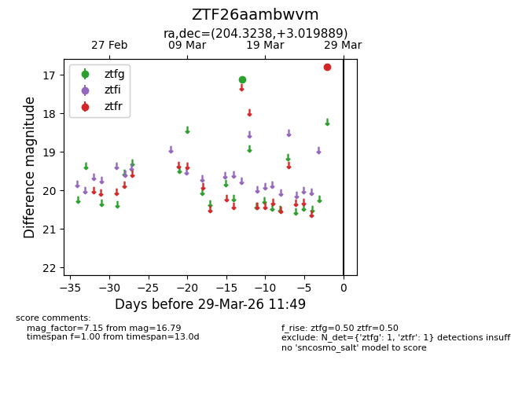
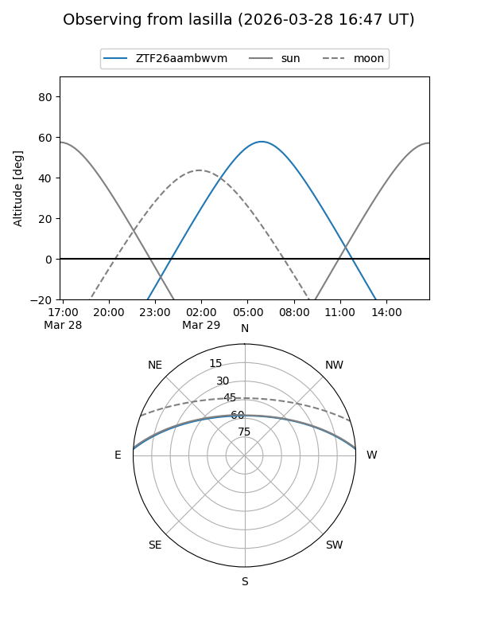
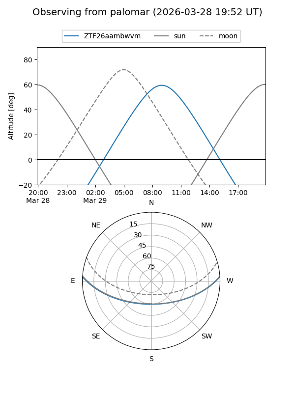

ZTF26aambwvm
Target ZTF26aambwvm at 2026-03-29 11:51
Aliases and brokers:
FINK: link
Lasair: link
ALeRCE: link
alt names
ZTF26aambwvm (ztf,fink_ztf)
Coordinates:
equatorial (ra, dec) = 204.3238,+3.01989
equatorial (HMS+DMS) = 13:37:17.71,+03:01:11.60
galactic (l, b) = (329.3582,+63.51393)
Flags:
Photometry:
last ztfg=17.12, ztfr=16.79
1 ztfg, 1 ztfr detections
Lightcurve

Visibility


Additional plots